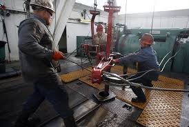
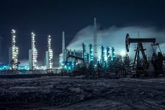
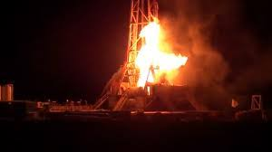
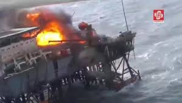
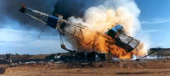
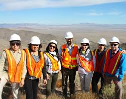

My name is Justin Tyme
My Intrest is Social Engineering. from a broad perspcetive. How does society evolve and is there really free will. Or are we all just blind servants to the powers that be. And who are they


The Bureau of Ocean Energy Management (BOEM). Replaced the Mineral Management Service(MMS) after some controversy involving BP.
The new ofice claims to manage the exploration and development of the nation's offshore resources. It seeks to appropriately balance economic development.sible for monitoring mineral resource exploration and development on the Outer Continental Shelf (OCS) in accordance with the OCS Lands Act. The Office of Resource Evaluation manages programs involving the collection and interpretation of geological, geophysical, and engineering data utilized in estimation quantities of discovered and undiscovered mineral resources within the OCS to assure receipt of fair market value of tracts offered to private industry for lease. They use Geoframe IESX interpretation software tointerpret and edit horizons, fault cuts, fault contacts, fault traces and fault boundaries. My goal is to learn all I can about what changes and regulations the oilfield has in regard to our land Management. For instance the land bid in New Mexico in 2018 that grossed almost a billion dollars, breaking all records. In 2017 nearly 27 million acres of federal land were leased to oil and gas developers, but less then 50% of the 26 million acres were producing any oil or gas. So why do we keep leasing federal land? Some public land advocates and lawmakers have suggested there might exist a more perverse incentive for companies to sit on undeveloped federal land. A company acquires a lease, it then carries those subsurface reserves as assets on its balance sheet. By doing this, a company can immediately improve its overall financial health, boost its attractiveness to shareholders and investors, and even increase its ability to borrow on favorable terms. Because of this, companies have the potential to directly benefit from amassing these undeveloped reserves through federal land leases, while the U.S. taxpayer loses out on revenue that could—and should—be generated from wells actually producing oil and gas products. Overall oil and gas companies do acquire federal leases with the purpose of increasing their booked reserves and bolstering their overall financial health. Rather then produce oil and gas making the share holders money they seem to me gearing towards land development. A memorandum from the Interior Department, made public Thursday, directs its field offices “to simplify and streamline the leasing process” so that federal leases to the oil and gas industry can be expedited “to ensure quarterly oil and gas lease sales are consistently held.” The new approach requires the Bureau of Land Management to process a proposed lease within six months. Once-mandatory public participation in safety reviews is now left to the discretion of the agency’s field representatives. Public protests of finalized leases will be shortened to 10 days, and a sale can move forward even if disputes are unresolved, according to the memo.




So the big question is what do we do about it? Its actually my question, really what can we do about it even if we see it happening and can perdict the end result, is it possible to make a difference? In the 95 years since the Mineral Leasing Act first set the federal royalty rate for oil and gas at 12.5 percent, the federal government’s oil and gas revenue policies have remained firmly fixed in the past while state governments and private landowners have, time and again, updated the terms for development on their lands. result of the federal government’s failure to modernize its oil and gas program, U.S. taxpayers are losing out on more than $730 million in revenue every year. When companies have drilled for oil and gas, the American public has often been left footing the bill to clean up the environmental damage that has been left behind. In 2014, the big five oil companies—BP, Chevron, ConocoPhillips, Exxon Mobil, and Shell—made $90 billion in profits. I've been a roughneck on both land and offshore, so i understand how much we all rely on the oilfield as a whole. I just want to know, have we sold everything we believe in, maybe even our future to an industry that may be literally feeding on us? Sure theres other crisis's, the beef industry and methane clouds. We have chem trails. Maybe its even all related, however this one issue is apparently sliding by us and getting worse. I'm open to suggestions, my email is at the bottom.
Contact me at justintyme329@gmail.com